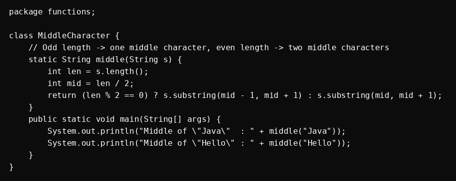
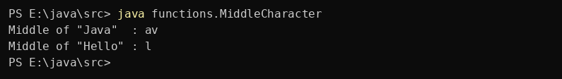

Question 3
Write a Java method to display the middle character of a string. Note: a) If the length of the string is odd there will be two middle characters. b) If the length of the string is even there will be one middle character.
Program

Program screenshot not found.
Output

No output screenshot added yet.